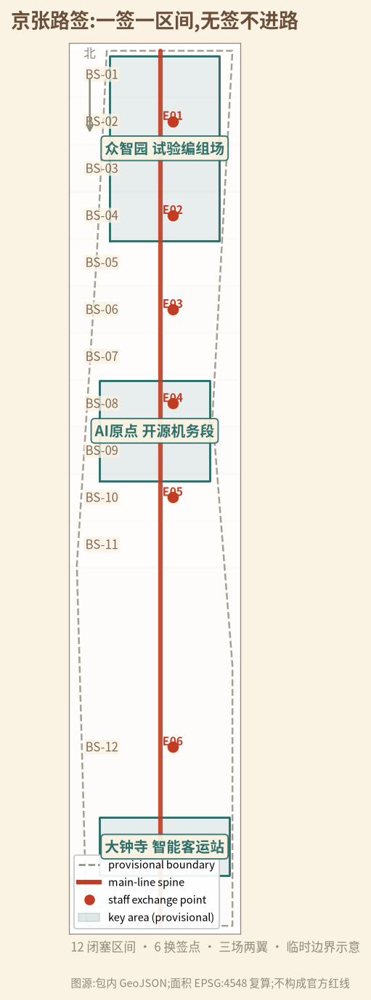
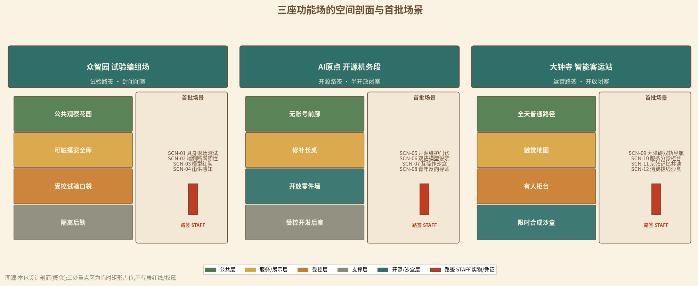
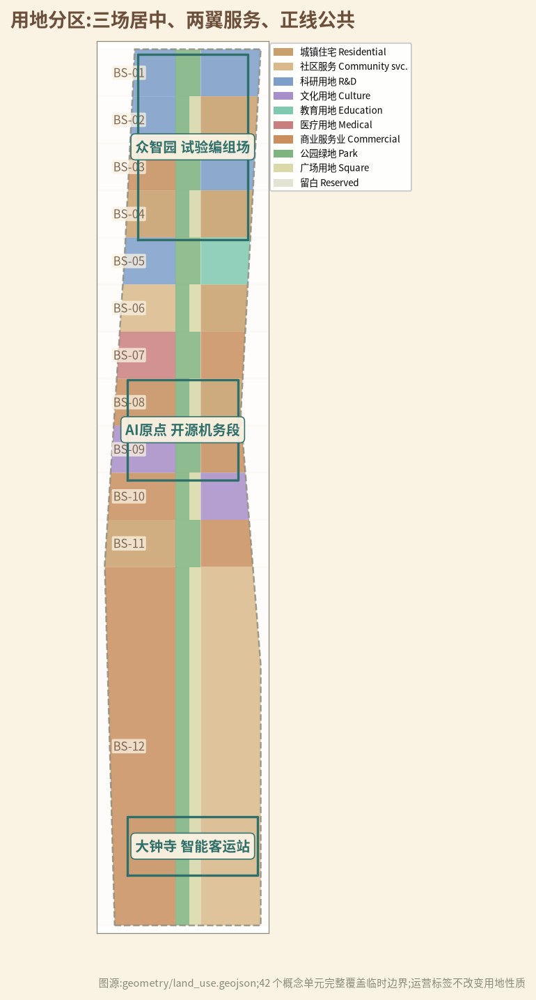
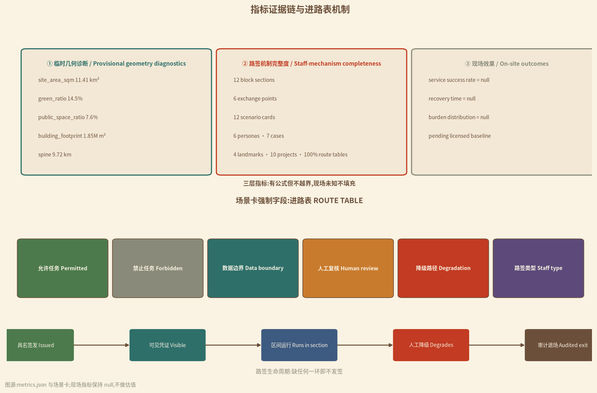

总览地图 · 一廊三场、六点十二区
把百年京张铁路单线时期的「路签闭塞」纪律转译为 AI 城市授权协议:任何 AI 服务要进入公共空间,必须先领到具名人工签发的「城市路签」。全线组织为一条正线公共廊、三座功能场、六处换签点与十二个闭塞区间(试验闭塞开源半开放运营开放)。

三层范围工作框架
| 层级 | 核心问题 | 本版交付 | 边界 |
|---|---|---|---|
| 统筹研究范围 (43.6 km²) | AI 产业、人才与区域伙伴如何互认凭证 | 路签生态、7 案例、5 区域接口、年度活动体系 | 不虚构伙伴、企业、资金 |
| 总体设计范围 (11.4 km²) | 走廊如何在技术更替中保持「凭票通行、无票停运」 | 一廊三场、六点十二区、42 用地单元 | 临时 SITE-001 非官方红线 |
| 三处重点区域 (368.4 ha) | 一次 AI 试验如何持证进入、降级退出、留下公共资产 | 12 场景进路表、三种场型剖面、10 项目包 | 临时矩形非地块/权属/工程范围 |
每层共用同一验收句:谁签发路签;凭证是否可见;无签时城市是否照常运行;停机后谁恢复、如何审计。
重点区域 · 三座功能场

| 重点区 | 场型 | 路签类型 |
|---|---|---|
| 众智园AI自主创新加速区 | 试验编组场 | 试验路签·封闭 |
| 北京AI原点社区 | 开源机务段 | 开源路签·半开放 |
| 大钟寺AI产业聚集区 | 智能客运站 | 运营路签·开放 |
三场遵循同一原则:公共层在最外侧与首层;智能设备只挂接可逆插接轨;任何场景缺「人工签发、可见凭证、降级流程、审计记录」即不发签。
用地分区

用地分类代码遵循自然资源部《国土空间调查、规划、用途管制用地用海分类指南》;「闭塞区间」「换签点」为运营叠加标签,不改变土地用途。容积率、高度、密度、退线等法定指标统一登记 unknown。
交通慢行

交通策略只成立两项:一条普通公共慢行脊 + 六处东西横缝。低速机器人只在众智园物理受控试验区间出现;普通路径、无障碍净宽与消防通道永不作测试变量。线位、客流、停车与桥隧由专业团队另行判断。
蓝绿公共空间
四个可逆朝圣地标
| 地标 | 位置 | 内容 |
|---|---|---|
| 路签塔 | 众智园 BS-01 观察花园 | 可触摸路签实物墙 + 失败档案陈列 |
| 换签钟 | AI 原点 BS-05 公共长桌 | 旧式站钟 + 换签时刻表 + 贡献者名单 |
| 扳道员记忆廊 | 正线中段换签点 | 铁路扳道员/调度员口述与工具展示 |
| 信号灯阵 | 大钟寺 BS-11 站台 | 可逆信号灯组,红停青行对应路签状态 |
建筑 · 概念体量
建筑图层仅含概念占位体量,总轮廓面积约 1853073.462 m²,用于内部关系诊断。任何真实建筑进入方案前需完成现状、年代、结构、权属、消防、文保、首层可达与维护调查;决策树只有四个出口:保留原状、修缮、可逆适配性再用、另行论证。证据不足时默认保留,不产生拆除清单。
AI 场景 · 12 张场景卡,每张绑定进路表
| ID | 场景 | 区间 | 数据边界 | 人工复核 | 降级路径 | 类型 |
|---|---|---|---|---|---|---|
| SCN-01 | 具身智能退场测试 | 众智园 BS-01 | 仅试验场合成数据 | 安全员具名放行 | 纸面边界+急停 | 产业测试 |
| SCN-02 | 端侧算力断网韧性 | 众智园 BS-02 | 仅能耗聚合读数 | 运维员复核包络 | 人工运行表+电话闭塞 | 产业测试 |
| SCN-03 | 模型红队与失败陈列 | 众智园 BS-02 | 无个人数据 | 披露责任复核 | 失败卡+修补版本归档 | 产业测试 |
| SCN-04 | 雨洪感知与人工雨尺 | 众智园 BS-03 | 仅环境传感器 | 养护员比对人工雨尺 | 人工雨尺+养护卡 | 产业测试 |
| SCN-05 | 开源维护门诊 | AI 原点 BS-05 | 仅公开代码库 | 维护者签到复核 | 修补手册+问题单 | 公共 |
| SCN-06 | 双语模型说明工坊 | AI 原点 BS-05 | 无训练数据上传 | 专业复核后发布 | 中英术语卡模板 | 公共 |
| SCN-07 | 城市服务互操作沙盒 | AI 原点 BS-06 | 仅合成数据 | 服务台复核转接 | 开放适配器+纸面流程 | 公共 |
| SCN-08 | 青年反向导师课 | AI 原点 BS-06 | 最小必要,可退出 | 监护人知情(未成年人) | 纸面任务卡+工具目录 | 公共 |
| SCN-09 | 无障碍慢行双轨导航 | 大钟寺 BS-09 | 无定位留存 | 现场核验普通路线 | 触觉静态地图+热线 | 公共 |
| SCN-10 | 公共服务分诊柜台 | 大钟寺 BS-10 | 无敏感材料滞留 | 有人柜台复核 | 纸面目录+电话路径 | 公共 |
| SCN-11 | 京张记忆共读 | 大钟寺 BS-11 | 仅公开清权史料 | 史实复核 | 实体时间线+撤回卡 | 公共 |
| SCN-12 | 消费智能体拔线沙盒 | 大钟寺 BS-12 | 无真实支付接入 | 每步人工确认 | 人工比价板+申诉入口 | 公共 |
六类用户画像
研发与开源维护者初创与产品团队公园使用者与居民老年与残障使用者一线运营维护者国际访客与区域伙伴
进路表为强制字段:允许任务、禁止任务、数据边界、人工复核、降级路径、路签类型缺一不发签。1.0 覆盖比例,现场绩效保持 null。
核心指标

| 指标 | 当前值 | 能说明 | 不能说明 |
|---|---|---|---|
| 闭塞区间 / 换签点 / 用地单元 | 12 / 6 / 42 | 空间合同已落位 | 官方范围或工程可行 |
| 场景卡 / 进路表覆盖 | 12 / 100% | 授权字段完整 | 服务有效或公众同意 |
| 概念绿地率 / 公共空间比例 | 14.5% / 7.6% | 内部复算一致 | 法定绿地率或控规值 |
| 现场服务成功率 / 恢复时间 | null | 尚无授权基线 | 不能填 0、100% 或估值 |
| FAR / 高度 / 拆除量 | unknown | 资料与专业判断未到 | 不能由概念图反推 |
更新项目 · 10 个可独立暂停的项目包
| 项目 | 核心交付 | 进入条件 | 失败后默认动作 |
|---|---|---|---|
| PRJ-01 路签制度沙盒 | 进路表 schema 与签发流程 | 法律、数据、公众复核 | 归档,不进现场 |
| PRJ-02 正线公共脊审计 | 普通通行/休息/静态导向/人工求助基线 | 官方范围与现场走查 | 公示缺口,不接 AI |
| PRJ-03 众智园试验区间 | 两个封闭试验闭塞区间 | 责任、能源、生态、安全 | 停测、复原、公开失败 |
| PRJ-04 大钟寺开放区间 | 一个开放体验区间与有人柜台 | 交通、权属、消费者权益、无障碍 | 只保留普通服务 |
| PRJ-05 换签点横缝修补 | 六处东西缝合与凭证展示点 | 权属、交通、文保、无障碍复核 | 维持现状并隔离风险 |
| PRJ-06 AI 原点影子门诊 | 开源维护门诊与模型说明工坊 | 场地、知识产权、消防、运营 | 退回纸面门诊 |
| PRJ-07 可逆构件库 | 插接轨、离线灯、人工雨尺等 | G0—G5 | 拆除并恢复 |
| PRJ-08 四座朝圣地标 | 可逆地标与贡献/失败档案 | 来源、版权、文保、维护 | 不永久展示 |
| PRJ-09 路签发放监测 | 凭证生命周期与审计记录 | 数据、法律、独立评估 | 停发并公示 |
| PRJ-10 换签节 | 年度降级演练与开放复盘 | 许可、人员、预算、安全 | 缩小、延期或取消 |
实施分期 (3 段)
- 近期·试验先发:众智园两个试验区间 + 大钟寺一个开放区间,路签制度与审计在沙盒中跑通;
- 中期·开源贯通:AI 原点开源门诊与换签点横缝补齐,全线 12 区间完成普通基线审计;
- 远期·常态运营:全部区间持签运营,按季度发布「换签报告」(发放/降级/追回/失败档案)。
年度节奏:每周开源维修门诊 · 每月一次区间降级演练(全线下一年共 12 次) · 每季度换签报告 · 每年「换签节」。
任务覆盖 · 23 项公告任务与 6 项智能体任务
| 任务组 | 覆盖 | 对应正文章节 |
|---|---|---|
| 公告 1.3 三大目标 | 1.3.1 / 1.3.2 / 1.3.3 | 统筹研究、总体设计、人才与场景 |
| 公告 1.4 三层范围 | 统筹 43.6 km² / 总体 11.4 km² / 重点 368.4 ha | 三层范围工作框架 |
| 公告 1.5 设计任务 | 1.5.1×2 / 1.5.2×5 / 1.5.3×3+1 | 产业、总体、交通、风貌、重点区 |
| agent.1 概念统筹 | 命名/Logo/三定五功/三区两翼 | 统筹研究范围产业与未来城市研究 |
| agent.2 创新生态 | 7 案例 / 生态图谱 / 要素机制 | 统筹研究 + AI 场景章节 |
| agent.3 AI+ 场景 | 12 场景卡 / 4 产业测试 / 6 画像 | AI 创新生态、人才画像与 AI+ 场景 |
| agent.4 公共空间地标 | 4 朝圣地标 / 荣誉体系 / 构件库 | 蓝绿空间、公共空间与城市风貌 |
| agent.5 文化叙事 | 京张-中关村-AI 融合叙事 / 导视系统 | 统筹研究 + 风貌章节 |
| agent.6 长期运营 | 年度活动 / 开发者社区 / 转化路径 | 更新项目清单、实施政策与分期计划 |
全部 17 项公告任务与 agent.1—agent.6 在 compliance_matrix.json 中逐项登记证据链。
自检状态
| 检查门 | 结果 | 说明 |
|---|---|---|
| 确定性校验 | PASS | manifest、双语契约、矩阵覆盖全部通过 |
| 空间复核 | PASS | 用地无缝覆盖临时边界,EPSG:4548 复算闭环 |
| 视觉与文件可读性 | PASS | 离线 HTML 零外部资源,指标与 metrics.json 一致 |
| 专业证据链 | PASS | 5 项强制标准 + 15 项设计深度 + 引用锚点完整 |
| 可进入正式评审 | true | can_enter_formal_review=true |
来源
- 北京市规自委海淀分局《百年京张AI创新带城市设计国际方案征集资格预审公告》(2026-05-09)
- 《面向全球智能体开展百年京张AI创新带城市设计开源征集任务书摘录》(仓库清权版)
- 中国国家博物馆《詹天佑测绘京张铁路线的仪器》(2021-03-30)
- 北京市园林绿化局《京张铁路遗址公园(一期)全面建成开放》(2023-06-26)
- 海淀区政府/中关村科学城《北京AI原点社区》公开信息(2026-01-05)
- 市科委《北京具身智能产业园》公开信息(2025-02-28)
- 北京市人民政府智能体(Agent)公开政策文件(2026-07-23)
- 百度百科(科普中国审核)《路签》条目(访问 2026-08-11)
- 仓库资料包:brief/site-package/、data/source_registry.json、provisional_boundaries.geojson
完整 29 条来源(发布者/URL/日期/采集/权利/限制)见 sources.json;海外案例仅作机制比较。
假设与边界
- A-BOUNDARY-001:临时边界;official polygon 发布后锁定版本、重裁图层、重算面积并发布差异日志。
- A-CONTROLS-001:容积率/高度/密度/退线/绿地率/市政容量无官方控制值,统一 unknown。
- A-STAFF-001:路签机制为概念建议,不构成法定审批制度;需法律、数据、运营与规划专业深化。
- A-AI-001:AI 不作医疗/法律/福利/信用/执法/真实支付终局决定,全部保留具名人工复核与申诉。
- A-PRIVACY-001:仅用公开或授权数据;无法证明公开来源的数据不进入提交包。
- A-METRICS-001:现场绩效在许可基线建立前保持 null,不填 0/100%/估值。
- A-VERB-001:所有空间落地均为概念建议/参考方案,不替代正式规划,不构成政府审定、立项、采购、合作、招商、投资或实施承诺。
完整 15 项假设见 assumptions.json;风险与硬停止条件见 risk.json。